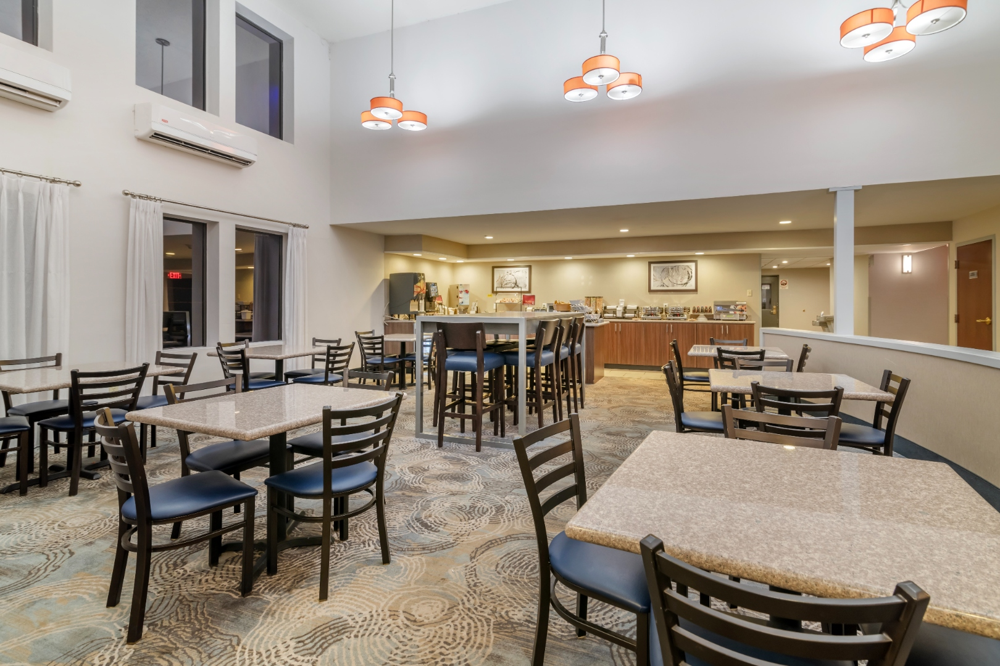
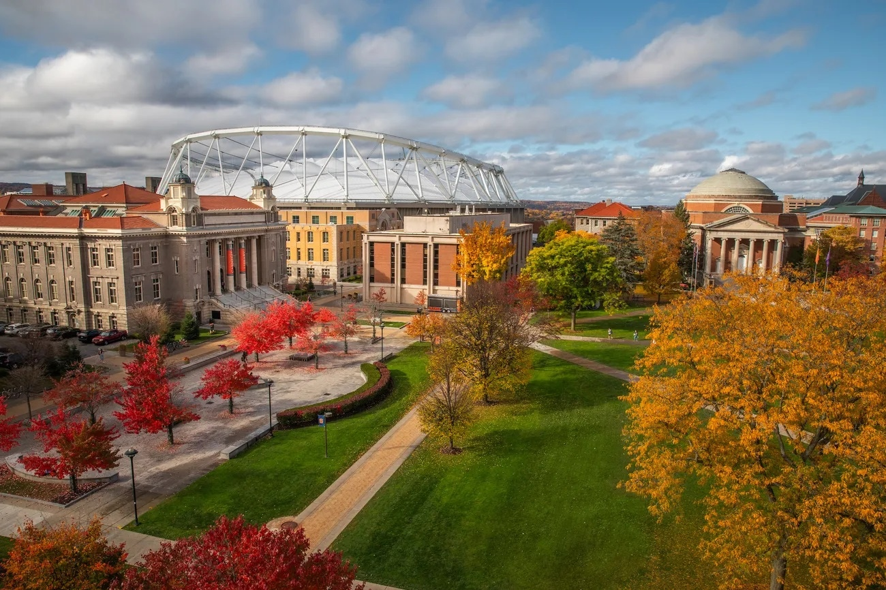
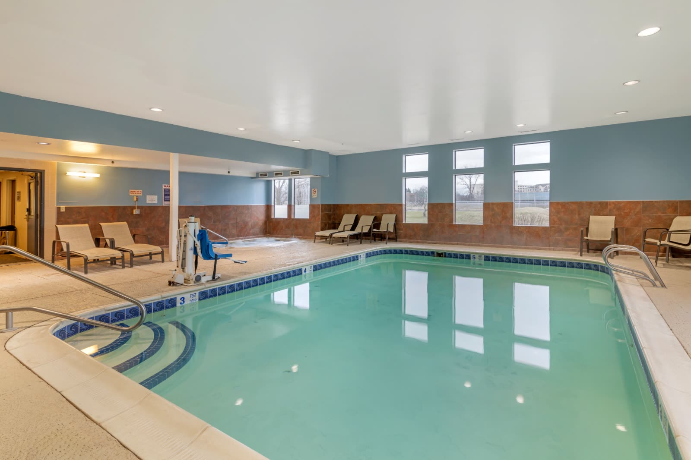
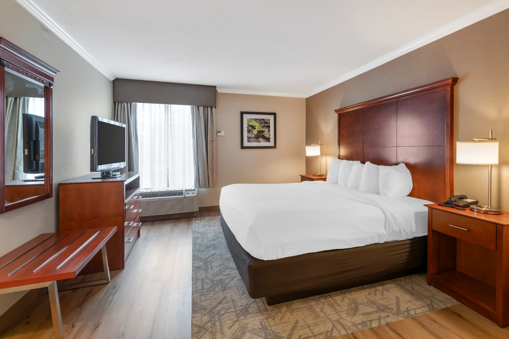
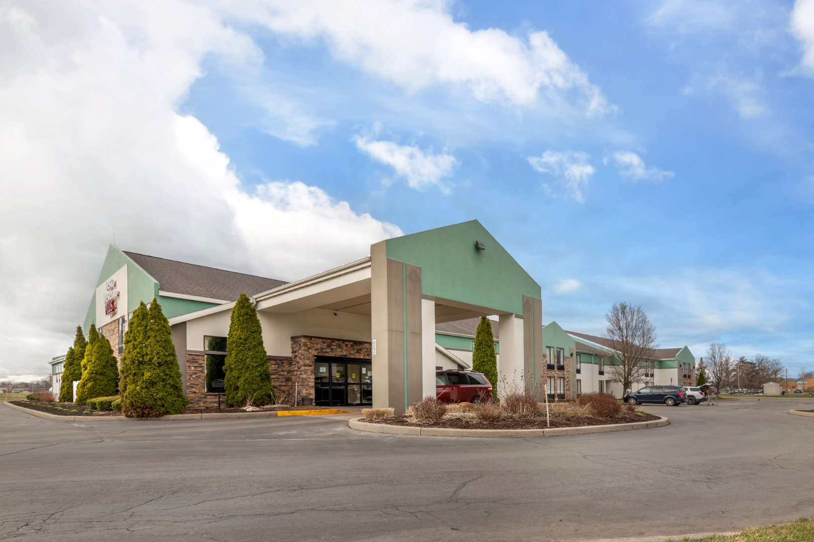
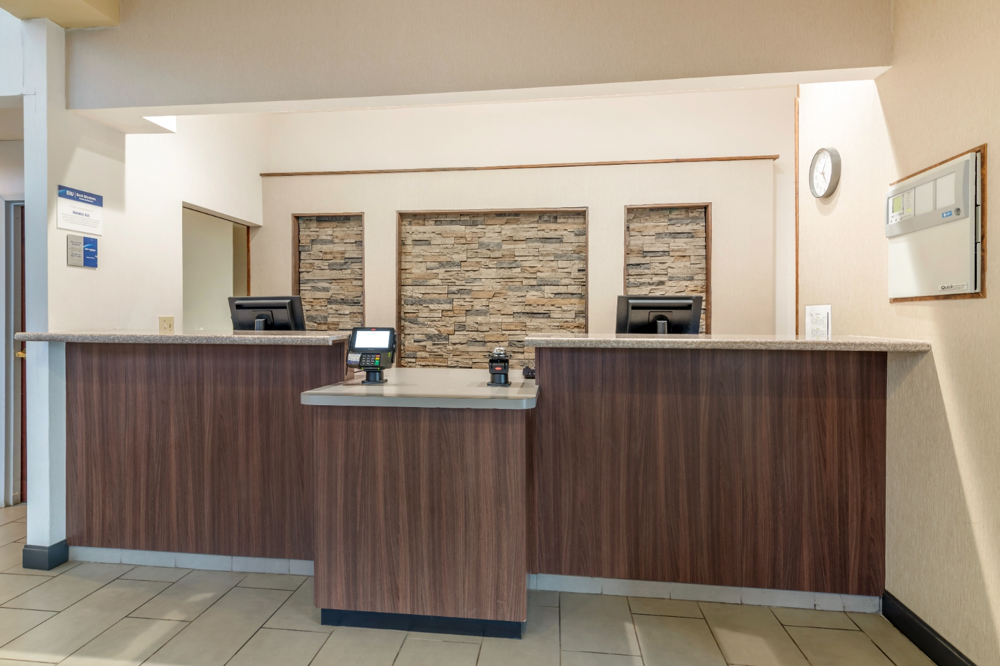
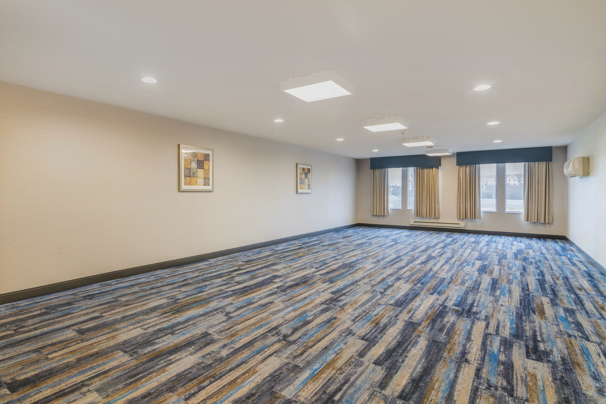
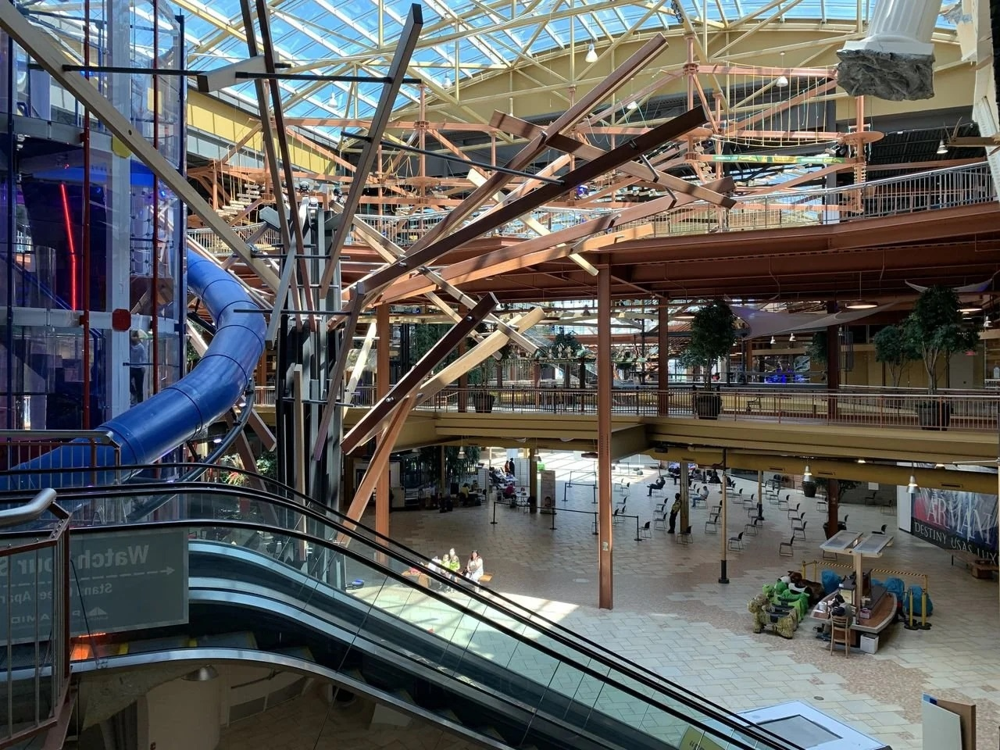
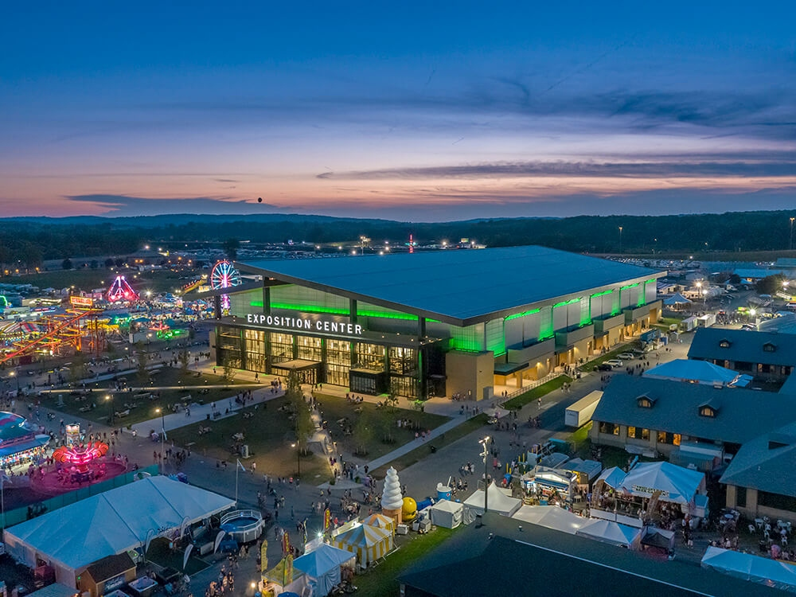

Breakfast
Free hot breakfast
Eggs, breakfast meats, oatmeal, fresh waffles, fruit, yogurt, coffee — included with every stay.

SU Campus · 12 minutes · JMA Dome
Heading to a Syracuse Orange game, parents weekend, commencement, or a campus visit? The Syracuse Grand puts the JMA Wireless Dome just 12 minutes away — without the downtown parking headaches and inflated rates.
Why visiting families pick us
The hotels closest to the Syracuse University campus charge a premium for the same level of room — and you'll still pay $20–35 a night for parking, fight one-way streets, and get woken up by Marshall Street's Friday night crowd. The Syracuse Grand sits in Liverpool, twelve minutes north on I-81 with no traffic, and we charge nothing for parking.
We host parents for graduation, recruits and their families for athletic visits, alumni in town for football and basketball weekends, and incoming students touring the campus. Sixty-one renovated rooms, free hot breakfast that fuels you for a long campus day, indoor pool and hot tub, fitness center, business center, and a 24/7 front desk that's used to late-night arrivals after games.
Visiting in May for graduation? Syracuse University Commencement is May 7–10, 2026 — book direct now at (315) 701-4400 for the best rate, or contact our group desk if you need a block of rooms for the family.
Driving to campus
Twelve minutes via I-81 South — about as far as a parking shuttle from a stadium-area hotel would walk you anyway.
Allow 12–15 minutes in typical traffic. Parking on campus during major events runs $20–40 — many of our guests Uber the last mile or use the campus lots farther out.
If you're in town for a longer stay, you're four miles from Syracuse Hancock International Airport (SYR), five miles from Destiny USA for shopping and rainy-day activities, six miles from Empower FCU Amphitheater on Onondaga Lake, and four miles from Upstate Medical if you have hospital visits to coordinate.
What you get

Eggs, breakfast meats, oatmeal, fresh waffles, fruit, yogurt, coffee — included with every stay.

Decompress after a long campus day. Open year-round.

Spacious enough for parents and a graduate, or for a recruit and their family.

No $25/night downtown garage. Park here, grab the car keys when you need them.

Late post-game arrivals are normal here. Front desk is staffed all night.

Need a private space for a parent dinner or alumni gathering? We can accommodate small groups.
FAQ
About 6 miles — roughly a 12-minute drive via I-81 South. The JMA Wireless Dome and the main campus are both off Comstock Avenue, exit 18.
Yes. Free self-parking for all guests, including game-day weekends. Compare that to $20–40 to park downtown for a single SU event.
Yes. Call (315) 701-4400 or use our contact form to set up a group block. Commencement weekend (May 7–10, 2026) books out months in advance — earlier is better.
We don't run a regular shuttle, but the campus is a 12-minute drive and Uber/Lyft from the hotel typically runs $15–20 each way. Many guests find it easier than parking on campus.
Yes — Hotel Skyler and Sheraton University are walking distance to the JMA Dome but charge significantly more, especially on game weekends. Syracuse Grand is the better-value option for most visiting families.
Other Syracuse stays
Six miles from the megafab campus. Built for contractors and corporate teams.

Five miles from the largest mall in NY. Family rooms, indoor pool.

Official NYS Fair Hotel Partner. 7 miles from the fairgrounds.
Game day, graduation, or campus tour
Twelve minutes to the JMA Dome, free parking, free breakfast. Book direct for the best rate, or call us for groups and athletic-event blocks.